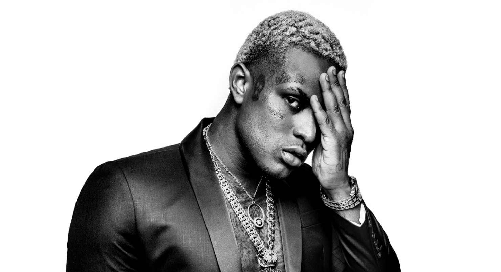

MC IG, nome artístico de Guilherme Sérgio Ramos de Souza, é um cantor, compositor e empresário brasileiro nascido em 12 de maio de 1997, na vila Medeiros, zona norte se São Paulo. Ele gahou destaque no cenário do funk paulista com sucessos como "3 Dias Virado" e "Goodnight Menina"./p>
Sua carreira teve início em 2015 com o lançamento do Ep "MC IG". No entanto, foi em 2018 que alcançou maior notoriedade com a música "3 Dias Virado", parte do álbum "Lavagem Cerebral", cujo videoclipe ultrapassou 300 milhões de viualizações no YouTube. Pela gravadora GR6 Explode, lançou projetos como "Dinamite" (2020), "O que o igor gilherme anda pensando?" (2022) e "Ninguém ta Puro!" (2023). Em 2023, assinou contrato com a Warner Music Brasil e lançou o álbum "Meu Nome Não É Igor %".
Em 2023, a música "Let's GO 4", que conta com a participação de MC IG, permaneceu por mais tocadas nas plataformas digitais do Brasil, sendo três meses no topo da parada de músicas brasileiras do Spotify.
MC IG mantém uma presença ativa nas redes sociais, especialmente no Instagram, onde compartilha novidades sobre sua carreira e vida pessoal.
As colaborações de MC IG com outros artistas têm sido um dos principais fatores que impulsionaram sua carreira e ampliaram seu alcance no cenário musical brasileiro. Trabalhando com nomes renomados do funk e do rap, como MC Kevin e Xamã, ele tem conseguido mesclar estilos e trazer novas sonoridades para suas músicas. Essas parcerias não apenas enriquecem suas produções, mas também permitem que ele alcance diferentes públicos e explore temas variados em suas letras. Além disso, seu talento para criar faixas que se tornam virais nas redes sociais tem sido fundamental para sua ascensão. Ao unir forças com outros artistas, MC IG demonstra sua versatilidade e capacidade de inovação, consolidando-se como um dos principais nomes da música urbana no Brasil. 